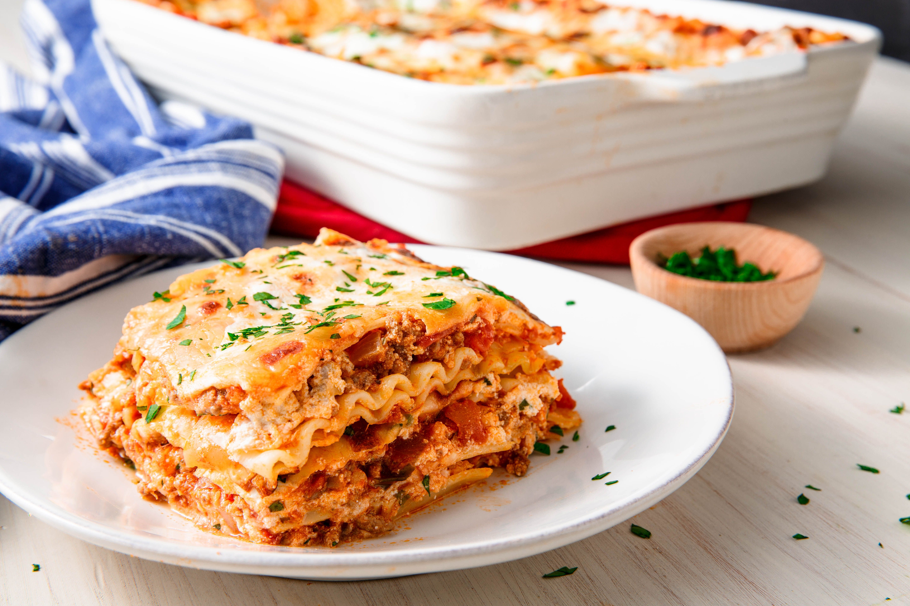

Lasagna

Description
A relatively simple, but incredibly tasty Lasagna dish that can feed up to 12 people. A dish that could wow even the most judgemental of Italian guests!
Ingredients
- 1lb Sweet Italian Sausage
- 3/4lb Lean Ground Beef
- 1/2 cup Minced Onion
- 2 Cloves Garlic, Crushed
- 1 Can Crushed Tomatoes
- 2 Cans Tomato Paste
- 2 Cans Canned Tomato Sauce
- 1/2 Cup Water
- 2 Tablespoons White Sugar
- 1 1/2 Teaspoons Dried Basil Leaves
- 1/2 Teaspoon Fennel Seeds
- 1 Teaspoon Italian Seasoning
- 1 1/2 Teaspoons Salt, Divided, or To Taste
- 1/4 Teaspoon Ground Black Pepper
- 4 Tablespoons Chopped Fresh Parsley
- 12 Lasagna Noodles
- 16 Ounces Ricotta Cheese
- 1 Egg
- 3/4 lb Mozzarella Cheese, Sliced
- 3/4 Cup Grated Parmesan Cheese
Instructions
- In a Dutch Oven, cook sausage, ground beef, onion, and garlic over a medium heat until well browned. Stir in crushed tomatoes, tomato paste, tomato sauce, and water. Season with sugar, basil, fennel seeds, Italian seasoning, 1 teaspoon salt, pepper, and 2 tablespoons parsley. Simmer, covered, for about 1 1/2 hours, stirring occasionally.
- Bring a large pot of lightly salted water to a boil. Cook Lasagna sheets in boiling water for 8 to 10 minutes. Drain pasta, and rinse with cold water. In a mixing bowl, combine Ricotta Cheese with egg, remaining parsley and 1/2 teaspoon salt.
- Preheat oven to 375 degrees F (190 degrees C).
- To assemble, spread 1 1/2 cups of meat sauce in the bottom of a 9x13-inch baking dish. Arrange 6 Lasagna sheets lengthwise over meat sauce. Spread with one half of the ricotta cheese mixture. Top with a third of mozzarella cheese slices. Spoon 1 1/2 cups meat sauce over mozzarella, and sprinkle with 1/4 cup Parmesan cheese. Cover with foil: to prevent sticking, either spray foil with cooking spray, or make sure the foil does not touch the cheese.
- Bake in preheated oven for 25 minutes. Remove foil, and bake an additional 25 minutes. Cool for 15 minutes before serving.
Back